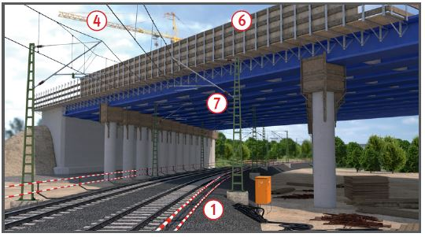
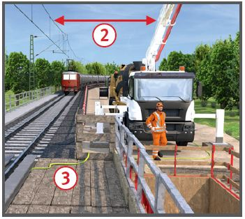
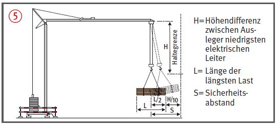
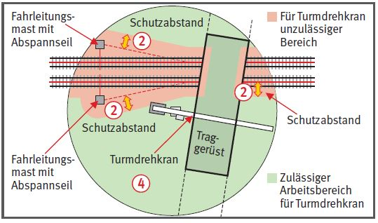

Ingenieurbauarbeiten in Gleisnähe
|
|

Gefährdungen
- Durch Zugfahrten und Stromübertritt aus der Fahrleitungsanlage können Personen verletzt werden.
- Das Bewegen von Lasten in Gleisnähe kann sowohl den Bahnbetrieb als auch die Versicherten gefährden.
Allgemeines
- Risiken können bestehen,
- wenn Personen, Bauteile, Maschinen, Geräte, Lasten in den Gleisbereich hineingeraten,
- wenn Arbeitskräfte die Bahntrasse ungesichert queren,
- wenn sich Teile von Maschinen oder Lasten unbeabsichtigt der Fahrleitungsanlage nähern,
- wenn Material oder Bauteile in die Gleisanlage abstürzen,
- wenn Triebfahrzeugführer durch in Gleisnähe bewegte Maschinen oder Lasten irritiert werden.
- Bei Arbeiten in der Nähe von Gleisen und Fahrleitungsanlagen nur bahntechnisch unterwiesenes Personal einsetzen.
Schutzmaßnahmen
Arbeitsvorbereitung
- Arbeiten beim Bahnbetreiber (der für den Bahnbetrieb zuständigen Stelle = BzS) an und neben der Gleisanlage anmelden, inkl. Weg von und zur Arbeitsstelle, dabei unbeabsichtigtes Hineingeraten in den Gleisbereich berücksichtigen.
- Für den Baufortschritt notwendige Gleissperrung, z. B. für das Versetzen von Rüstung, Schalung, Fertigteilen über der Gleisanlage bei der Anmeldung beachten. Dies gilt ebenso für erforderliche Abschaltungen der Fahrleitungsanlage.
- Bei Arbeiten beidseits der Bahntrasse die Baustelleneinrichtung so planen, dass Anlass zum Queren der Gleisanlage vermieden wird. Kleingeräte, Werkstattcontainer, Sanitäranlagen beidseits vorhalten.
- Sichere Verkehrswege im Fall des Querens der Bahntrasse festlegen:
- Sichere Übergänge, wie Tunnel, Brücken und Bahnübergänge in Baustellennähe nutzen,
- Behelfsbahnübergang mit Sicherung einrichten lassen,
- Firmenfahrzeug für längere Verkehrswege, z. B. über vorh. Bahnübergang, bereitstellen.
Arbeiten im Gleisbereich
- nur mit gültiger und wirksamer Sicherungsanweisung und nach Anweisung des Aufsichtsführenden durchführen.
- Mögliche Sicherungsmaßnahmen (Reihenfolge = Wertigkeit): Sperrung, Feste Absperrung
 , ATWS-Anlage, Sicherungsposten.
, ATWS-Anlage, Sicherungsposten.
- Angaben zur Höhe der Fahrleitung im Arbeitsbereich einholen (DB: Angabe in der Betra).
- Fahrleitung absenken lassen, wenn dies bei Brückenneubauten für die Einhaltung des Schutzabstandes erforderlich ist, dabei Lehrgerüst-Bauhöhe beachten.

Einsatz von Hebezeugen und Baumaschinen
- Schutzabstand zur Fahrleitungsanlage
 (Fahrleitung, Quertragwerke, Speiseleitung, Fahrschiene) sicherstellen, Schutzabstand bei 15kV mind. 1,5 m.
(Fahrleitung, Quertragwerke, Speiseleitung, Fahrschiene) sicherstellen, Schutzabstand bei 15kV mind. 1,5 m.
- Gefahr durch unbeabsichtigte Annäherung an die Fahrleitungsanlage durch Großgeräte, wie Turmdrehkran, Betonpumpe, prüfen und in Abstimmung mit dem Bahnbetreiber Schutzmaßnahmen festlegen. Wenn Gefahr besteht, dass der Schutzabstand unterschritten wird: Fahrleitungsanlage ausschalten lassen.
- Bei allen Baumaschinen, z. B. Betonpumpen, Krane im Bereich von eingeschalteten Fahrleitungsanlagen eine Bahnerdung herstellen
 (Querschnitt des Erdungsseils nach Angabe des Bahnbetreibers.
(Querschnitt des Erdungsseils nach Angabe des Bahnbetreibers.
- Turmdrehkrane mit Arbeitsbereichsbegrenzung ausrüsten, um ein Schwenken mit Lasten über die Gleise zu verhindern
Schwenkbegrenzung reicht i. A. nicht aus  .
.
- Bei Kranen Ausschwingen angeschlagener Lasten, auch durch Windeinfluss, beachten. Großflächenschalung in Gleisnähe nur bei Sperrung der angrenzenden Gleise bewegen, wenn die Gefahr des Hineingeratens besteht.
- Ausschwingen kann wie folgt abgeschätzt werden: halbe Lastlänge der längsten Last zzgl. 10% des Abstandes zwischen Ausleger und niedrigster spannungsführenden Leitung L/2 + H/10
 .
.
- Betriebsanweisung für Kranbetrieb bei Wind erstellen, kein Kranbetrieb über Windstärke 4 vorsehen, Windmesser am Ausleger oder der Turmspitze anbringen.
- Wenn Lasten (z. B. Rüstträger, Fertigteile) über der Bahntrasse versetzt werden müssen, muss diese gesperrt sein und die Fahrleitungsanlage muss ausgeschaltet sein.
- Nur in die örtl. Verhältnisse eingewiesene Maschinenführer einsetzen, betrifft z. B. Mietkranführer.


Schalung und Rüstung
- Mit von Hand bewegtem Material (z. B. Bewehrungstäbe, Schalbretter) und Arbeitsmitteln (z. B. Gerüstteile) darf es auch durch unbeabsichtigte Bewegung nicht möglich sein, den Schutzabstand zur Fahrleitungsanlage zu unterschreiten.
- Hubarbeits- und fahrbare Arbeitsbühnen:
- Sichere Aufstandfläche herstellen, Bremsen feststellen,
- Gummibereifte Arbeitsmittel unter und neben der spannungführenden Fahrleitungsanlage sind immer über geeignete, meist abrollbare Erdungsvorrichtungen nach Vorgabe des Betreibers bahnzuerden.
- Dicht geschlossene Schutzwand an Arbeitsgerüsten, Traggerüsten, Schalungen über und neben der Fahrleitung herstellen (Höhe >1,8 m)
 . Keine Bauteile bzw. Werkzeuge über die Schutzwand hängen lassen.
. Keine Bauteile bzw. Werkzeuge über die Schutzwand hängen lassen.
- Schalung und Rüstung über Fahrleitung seitlich und unten dicht schließen
 .
.
- Für Schalung und Rüstung im Rissbereich der Fahrleitung
 eine durchgehende elektrische Verbindung gemäß Erdungsplan herstellen und mit der Bahnerde verbinden.
eine durchgehende elektrische Verbindung gemäß Erdungsplan herstellen und mit der Bahnerde verbinden.
- Anschluss für Bahnerde von der BzS festlegen lassen.

Verhalten
- Gleisbereich nur bei vorhandener Sicherung, z. B. Gleissperrung, Feste Absperrung oder Warnung und nur nach Anweisung durch Aufsichtführenden betreten. Eine feste Absperrung nicht übersteigen.
- Angewiesenen Schutzabstand zur Fahrleitungsanlage einhalten, auch mit Bauteilen und Werkzeugen .
- Warnkleidung tragen, mind. Klasse 2.
07/2021